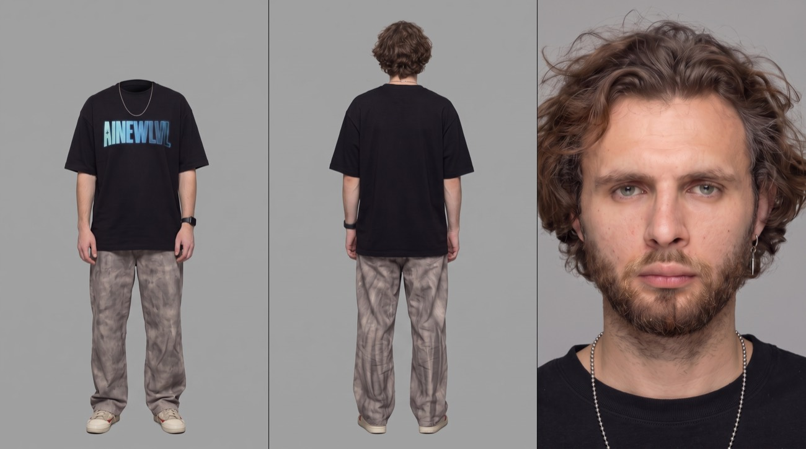

Ради него
разбили стекло
Насколько крутым должен быть товар, чтобы вор увидел его через окно машины, разбил стекло и сбежал с ним средь бела дня? Тренд отвечает на этот вопрос за 12 секунд. Подставляешь свой продукт — работает с чем угодно: от коробки с игрой до лапши быстрого приготовления.
Что загружаешь
Всего две картинки, и порядок важен: первым — продукт, вторым — персонаж. Нейросеть берёт с них только идентичность: форму товара и лицо героя. Сцену, свет, разбитое стекло и погоню она строит сама по промпту.

Как выставить
Промпт написан ровно под эти параметры: внутри прописана склейка на 8.8 секунде и вертикальная композиция. Поставишь другую длительность — сломается драматургия, поставишь горизонт — развалится кадр.
- Открой любой сервис с Seedance 2.5. Какой именно — не принципиально, лишь бы была эта модель. Вкладка «Видео».
- Загрузи два фото по порядку. Первым продукт, вторым персонаж. Проверь, что обе ссылки на изображения активны в промпте.
- Вставь промпт целиком. Менять в нём ничего не нужно — он уже настроен под всю сцену.
- Выстави настройки из таблицы выше и жми генерацию.
Мастер-промпт
Промпт огромный — почти двадцать две тысячи знаков. Это не раздутость: в нём покадрово прописаны физика стекла, направление взглядов, инерция тела и поведение материалов. Именно поэтому кадр выглядит снятым, а не сгенерированным. Копируй целиком, ничего не сокращая.
@Image1 = PRODUCT IDENTITY REFERENCE ONLY. Use @Image1 exclusively for the exact visual identity of the PRODUCT: recognizable shape, proportions, colors, materials, surface details, packaging, branding, logo, typography and distinctive design features. Ignore the white or neutral background of @Image1 completely. Do not reproduce its studio environment, reference lighting, shadows, composition or camera angle. Reconstruct the PRODUCT naturally inside the generated scene at a believable real-world scale appropriate to the object shown in @Image1. The PRODUCT remains the exact same recognizable physical object throughout the entire film: on the rear seat, during inspection, during the grab, while being removed from the vehicle, and in the character's hands during the final chase. @Image1 controls PRODUCT IDENTITY ONLY. @Image2 = CHARACTER IDENTITY AND WARDROBE REFERENCE ONLY. Use @Image2 exclusively for the exact recognizable character identity: face, facial proportions, hairstyle, skin appearance, body proportions, clothing and existing accessories. Ignore the background, environment, lighting and camera composition of @Image2. Preserve the exact same recognizable person throughout the entire film. Add ONE pair of elegant dark cinematic sunglasses with a thin realistic frame from the character's first appearance. The sunglasses fit naturally on the face and remain physically consistent. If @Image2 already contains suitable glasses or sunglasses, preserve that existing pair instead. Never create two pairs of glasses. Adding sunglasses must never alter the underlying facial identity. CREATE ONE 12-SECOND EXTREMELY PHOTOREALISTIC CINEMATIC FILM SEQUENCE. The supplied reference images control ONLY PRODUCT identity and CHARACTER identity. Everything else is controlled by this screenplay: environment, car, product placement, lighting, camera, acting, eyelines, human movement, timing, stone action, glass break, product grab, editing, and final police chase. The film contains TWO DISTINCT SHOTS: SHOT 1 — approximately 0.0–8.8s: the complete car theft. SHOT 2 — approximately 8.8–12.0s: a completely separate waist-up police chase shot. At approximately 8.8 seconds, perform a HARD CUT. SHOT 2 is a completely new camera setup. Do not visually continue the car composition into Shot 2. The final police chase is mandatory. CINEMATIC WORLD Create a believable premium dark-colored sedan parked beside a quiet American city sidewalk. The car interior has tactile black leather upholstery with natural wrinkles, seams, subtle wear and irregular reflections. For SHOT 1, mount the camera completely still INSIDE the car at approximately seated-passenger chest height, looking across the rear passenger seat toward one large closed side window. Use a natural cinematic medium-wide perspective approximately equivalent to a 35mm spherical cinema lens. The black leather rear seat occupies the lower and middle portion of the composition. The large side window occupies much of the central and upper frame. Outside the window is a believable sidewalk with older brick-and-stone American urban architecture. Place the exact PRODUCT from @Image1 naturally on the black leather rear seat near the side window. The PRODUCT must be clearly visible to both the camera and a passerby outside. Position it close enough to the window that an adult outside could realistically reach it after the glass is broken. Give the PRODUCT believable real-world scale, correct perspective, physical weight, natural contact with the leather, contact shadows and reflected environmental light. Nothing floats. Nothing looks composited. Nothing resembles a pasted studio photograph. LIGHTING AND FILM LANGUAGE Late afternoon. Warm directional sunlight enters naturally through the side window. The exterior is moderately brighter than the interior while retaining highlight detail. The car interior remains darker and richer with deep but readable shadows. A natural patch of warm sunlight partially catches the rear seat and PRODUCT. The character outside receives believable directional sunlight with natural facial modelling and smooth shadow transitions. Use motivated natural light. Window reflections remain physically present until the glass breaks. The entire video feels like twelve seconds physically cut from a beautifully photographed theatrical crime-comedy feature film. Use the visual language of premium late-1960s / early-1970s American 35mm cinema: warm photochemical color response, natural warm skin tones, creamy highlights, restrained saturation, rich amber and brown undertones, deep neutral blacks with preserved shadow information, smooth photochemical highlight roll-off, fine irregular organic 35mm film grain, subtle highlight halation, gentle optical bloom, slightly softened micro-contrast, natural vintage spherical-lens rendering, subtle edge softness, realistic optical depth, natural focus falloff, restrained depth of field, and natural theatrical 24fps motion blur. The image must feel genuinely photographed rather than digitally filtered. No glossy commercial aesthetic. No artificial HDR. No sterile digital sharpness. No plastic skin. Maintain EXACTLY THE SAME cinematic color science, film texture and realism during BOTH shots. ACTING DIRECTION — HIGHEST PRIORITY The character behaves like a real human being, not an AI avatar executing instructions. All acting is restrained, psychologically motivated and physically believable. THOUGHT PRECEDES ACTION. CAUSE PRECEDES EFFECT. The natural reaction rhythm is: EYES REACT FIRST → TINY PROCESSING PAUSE → HEAD FOLLOWS → TINY PAUSE → BODY FOLLOWS. Never combine multiple emotional beats into one rushed gesture. Every important action has a readable beginning, middle and completion. Allow tiny human pauses. Use natural breathing. Natural acceleration and deceleration. Natural body inertia. Natural weight transfer. Natural center of gravity. Correct human anatomy and joint articulation. Emotion appears through eyeline, breathing, tiny facial changes, hesitation and posture rather than exaggerated expressions. No twitching. No sudden body jerks. No robotic transitions. No unnecessary hand movements. No exaggerated comedy acting. The absurd situation is performed with complete seriousness. 0.0–0.5s — QUIET OPENING Begin inside the parked car. The camera is ABSOLUTELY LOCKED OFF. The PRODUCT rests naturally on the black leather rear seat. Warm late-afternoon sunlight enters through the closed side window. Hold the quiet observational composition. No character yet. No camera movement. 0.5–1.5s — WALK PAST / NOTICE / STEP BACK The character from @Image2 enters outside the vehicle from the RIGHT and walks naturally toward the LEFT at a relaxed human pace. The character already wears the established sunglasses. They almost walk completely past the visible window. At the last moment, the PRODUCT catches their peripheral vision. They STOP. Do not immediately move the entire body. First, only the EYES shift toward the PRODUCT. Tiny processing pause. Then the HEAD slowly follows. Tiny pause. Only then does the character take ONE natural step backward toward the RIGHT, returning clearly into the window composition. They stop again. The body settles naturally. Their gaze remains fixed on the PRODUCT. The expression changes subtly from neutral to genuinely intrigued. No exaggerated surprise. No sudden head snap. 1.5–3.0s — APPROACH / FACE AT GLASS / SUNGLASSES The character slowly approaches the side window. They place BOTH HANDS naturally against the exterior surface of the glass. They lean forward until the face is very close to the window, almost pressed against it. Then they become STILL. Hold this position. The character simply studies the PRODUCT. The PRODUCT is the ONLY visual target. Because the PRODUCT rests on the seat below standing eye level, the character's chin angles subtly downward. BOTH EYES physically converge DOWNWARD THROUGH THE GLASS DIRECTLY ONTO THE PRODUCT. The eyeline must correspond to the PRODUCT's actual position. No camera-facing glance. No upward glance. No wandering eyes. Hold the direct PRODUCT gaze long enough for the acting to register. Only then does ONE HAND gently leave the glass. Using two fingers, the character slowly raises the sunglasses slightly upward, only enough to expose the eyes. This movement is small, calm and physically natural. The head remains almost still. CRITICAL: WHILE THE SUNGLASSES MOVE, BOTH EYES REMAIN PHYSICALLY LOCKED ON THE PRODUCT. The pupils continue pointing toward the exact PRODUCT location. The character raises the sunglasses specifically to inspect the PRODUCT more clearly. Hold the exposed-eye stare for a brief cinematic beat. Then smoothly lower the sunglasses back into their original position. The eyes remain on the PRODUCT until the sunglasses are completely lowered. 3.0–4.0s — STEP BACK / CHECK STREET / DECISION Only after lowering the sunglasses does the character slowly push away from the window. Take half a natural step backward. The body settles. Tiny pause. Now the gaze leaves the PRODUCT. The character calmly checks toward the RIGHT. Tiny pause. Then calmly checks toward the LEFT. During this check, allow ONE small unconscious nervous clothing adjustment appropriate to the wardrobe already present in @Image2. Use only an existing clothing element. Do not invent additional clothing solely for the gesture. Do not repeat the adjustment. The character is primarily checking whether anybody is watching. After looking both ways, hold a tiny decision beat. The posture subtly firms. The audience understands the decision before the character acts. 4.0–5.0s — PHYSICALLY PICK UP THE STONE Both hands begin EMPTY. Designate ONE hand as the STONE HAND. Designate the opposite hand as the PRODUCT HAND. Keep these roles physically consistent. The character naturally bends the knees and upper body downward toward the pavement outside the vehicle. The movement shows realistic balance and weight transfer. The head, shoulders and hands naturally disappear below the lower edge of the visible window. The STONE HAND reaches toward the pavement. The fingers physically close around ONE SMALL ROUGH STONE. The character physically picks it up. Only after retrieving the stone does the character rise. They naturally return into the visible window composition. The SAME STONE is clearly visible in the STONE HAND. The PRODUCT HAND remains empty. Hold for a tiny beat so the stone is clearly established. 5.0–5.7s — PHYSICALLY REALISTIC STONE STRIKE The character breaks the side window with ONE short, compact, physically credible strike using the STONE. No large theatrical swing. No bare-handed punch. Standing close to the window, the STONE HAND elbow bends naturally. The forearm retracts only a short distance. Then the forearm accelerates forward in ONE compact controlled arc. The wrist remains naturally aligned. The fingers remain securely wrapped around the stone. THE STONE LEADS THE MOTION. Show clear physical causality: STONE APPROACHES INTACT GLASS → STONE PHYSICALLY CONTACTS GLASS → HAND NATURALLY DECELERATES AGAINST IMPACT → FRACTURE BEGINS AT THE STONE CONTACT POINT → ONLY THEN DOES THE TEMPERED GLASS COLLAPSE. The side window fractures into many small realistic tempered-glass fragments. Fragments fall primarily downward under gravity with limited physically plausible inward scattering. The character naturally reacts to the impact resistance. The STONE HAND remains outside the vehicle. The bare fist, palm, knuckles, fingers, elbow or forearm NEVER break the glass. ONLY THE STONE breaks the window. 5.7–6.1s — DISCARD THE STONE After the glass collapses, the STONE HAND naturally recoils away from the broken window. The character visibly opens the fingers and drops or lightly tosses the stone DOWNWARD OUTSIDE THE CAR. The stone visibly leaves the hand and falls toward the pavement out of frame. The stone action is now completely finished. Tiny natural pause. No sleeve adjustment. No jacket adjustment. No wiping motion. No unnecessary glass-clearing movement. No random hand action. 6.1–7.7s — SIGNATURE PRODUCT GRAB Only now does the previously empty PRODUCT HAND become active. The character's gaze immediately returns to the PRODUCT. The PRODUCT HAND smoothly reaches through the broken window. The arm follows a believable anatomical path through the opening. FOR THE FIRST TIME IN SHOT 1, THE CAMERA BEGINS TO MOVE. Perform ONE slow, deliberate cinematic PUSH-IN from the original locked interior position toward the approaching hand and PRODUCT. The movement feels like a real controlled cinema-camera push, not a digital zoom. As the fingertips approach the PRODUCT, temporal cadence gradually decelerates into elegant MICRO SLOW-MOTION. The hand approaches. The camera approaches. The fingertips come within millimeters of the PRODUCT. HOLD. For a brief suspended cinematic beat, almost nothing moves. The fingertips make first physical contact with the PRODUCT. The fingers begin naturally wrapping around it. Show tactile interaction between skin and PRODUCT material. The hand establishes a COMPLETE SECURE GRIP. HOLD THE COMPLETED GRIP for another brief fraction of a second. THIS MOMENT MUST BREATHE. This is the signature visual climax of the theft. Show tactile cinematic detail: fingertips, natural skin deformation, PRODUCT surface texture, PRODUCT material responding to pressure, black leather texture, warm sunlight, tiny glass fragments. Do not instantly remove the PRODUCT when the fingertips first touch it. The precise visual rhythm is: APPROACH → DECELERATE → ALMOST TOUCH → HOLD → FIRST CONTACT → FINGERS CLOSE → COMPLETE GRIP → MICRO-HOLD → RETURN TO NORMAL SPEED. Then the suspended moment releases. The character decisively pulls the PRODUCT away from the seat. The PRODUCT responds according to its real physical material visible in @Image1. Soft materials flex naturally. Fabric folds naturally. Flexible packaging compresses naturally. Rigid objects remain structurally rigid and respond with believable mass and inertia. The PRODUCT never changes identity, branding, colors, proportions or design. 7.7–8.8s — REMOVE PRODUCT / BEGIN ESCAPE The micro slow-motion sensation releases back into normal theatrical motion. The camera performs a fast but physically smooth pull-back toward the wider interior composition. The character pulls the EXACT SAME PRODUCT completely through the broken window. The original location of the PRODUCT on the rear seat is now visibly empty. The character securely possesses the PRODUCT. They naturally turn away from the vehicle and begin leaving with it. Do not spend time showing a long departure. The theft is complete. 8.8s — HARD CUT SHOT 1 ENDS COMPLETELY. CUT TO A COMPLETELY NEW CAMERA SETUP. Do not continue the car composition. Do not film the chase from inside the vehicle. Do not show the character transitioning from the vehicle into the chase. The next shot begins later, when the foot chase is ALREADY HAPPENING. 8.8–12.0s — SHOT 2 — SIMPLE WAIST-UP POLICE CHASE NEW SHOT. The SAME character from @Image2 is ALREADY RUNNING AWAY with the EXACT SAME stolen PRODUCT from @Image1. The camera is positioned DIRECTLY IN FRONT OF the running character, several feet away, facing the character. Frame the character approximately FROM THE WAIST UP. The character is LARGE and CENTERED in the foreground. This is a cinematic medium tracking shot. The camera moves backward smoothly at the SAME SPEED as the running character, maintaining approximately the SAME WAIST-UP FRAMING throughout the shot. The character runs FORWARD toward the retreating camera. The character is not running toward the police. The police are not approaching from the opposite direction. MANDATORY SIMPLE SPATIAL COMPOSITION: CAMERA ↓ RUNNING CHARACTER WAIST-UP LARGE IN FOREGROUND HOLDING STOLEN PRODUCT ↓ TWO RUNNING POLICE OFFICERS BEHIND THE CHARACTER ↓ STREET BACKGROUND The EXACT SAME stolen PRODUCT remains clearly visible in the character's hands. The PRODUCT is carried naturally according to its real size, weight and material. The PRODUCT does not disappear. The PRODUCT does not change. The PRODUCT is not hidden behind the body. DIRECTLY BEHIND THE CHARACTER, TWO UNIFORMED AMERICAN POLICE OFFICERS ARE RUNNING AFTER THEM ON FOOT. Both police officers are physically located BEHIND the fleeing character. Both remain clearly visible in the background of the SAME FRAME. They are pursuing the character FROM BEHIND. They never appear in front of the character. They never appear between the camera and character. They never run toward the character from the opposite direction. One police officer may carry a police baton while running. The other officer visibly shouts toward the fleeing character and may reach one arm forward. Keep the police choreography simple. They RUN AFTER THE CHARACTER. That is their primary action. No complex police staging. No police vehicles are required. Do not replace the two running officers with police cars. The character runs with realistic human body mechanics. Natural breathing. Natural forward momentum. Natural body weight. Natural shoulder movement. Natural running rhythm. Natural clothing movement. Restrained physical urgency. The character does NOT perform exaggerated panic. The face is not blank either. Show believable physical effort and awareness of being chased. For most of this final shot, the character looks FORWARD while running. Near the END of the shot, the character becomes concerned about how close the police officers are. The EYES react first. Tiny human reaction. Without stopping the run, the character naturally rotates the HEAD and slightly rotates the UPPER SHOULDER. The character LOOKS BACK OVER ONE SHOULDER DIRECTLY AT THE TWO POLICE OFFICERS RUNNING BEHIND. This is a deliberate glance backward to check HOW CLOSE THE POLICE ARE. The body continues running forward. The head briefly looks backward. The PRODUCT remains securely held and clearly visible. The two police officers remain behind the character and continue actively running after them. Hold this final cinematic image briefly: THE CHARACTER IS LARGE AND WAIST-UP IN THE FOREGROUND, RUNNING WITH THE STOLEN PRODUCT, LOOKING BACK OVER ONE SHOULDER, WHILE TWO POLICE OFFICERS RUN AFTER THE CHARACTER IN THE BACKGROUND. END WHILE THE CHASE IS STILL HAPPENING. Do not resolve the chase. FINAL PRIORITIES PRIORITY 1 — @Image2 CHARACTER IDENTITY. Preserve the same recognizable character throughout both shots. PRIORITY 2 — @Image1 PRODUCT IDENTITY. Preserve the exact same recognizable PRODUCT throughout the complete story. PRIORITY 3 — NATURAL HUMAN ACTING. Every action is readable, restrained and physically motivated. PRIORITY 4 — PRODUCT EYELINE. When inspecting the PRODUCT and lifting the sunglasses, both eyes remain physically directed toward the PRODUCT's actual position. PRIORITY 5 — STONE PHYSICS. The character physically bends down, physically picks up the stone, visibly rises with it, breaks the glass ONLY through visible stone-to-glass contact, and visibly discards the stone before reaching for the PRODUCT. PRIORITY 6 — SIGNATURE GRAB. The PRODUCT grab must contain: approach → deceleration → almost-touch → hold → first contact → fingers close → complete grip → micro-hold → return to normal speed. PRIORITY 7 — HARD CUT. At approximately 8.8 seconds, the car scene is completely finished and the film cuts to a NEW exterior chase shot. PRIORITY 8 — FINAL SHOT COMPOSITION. The final shot is a SIMPLE WAIST-UP FRONT-FACING TRACKING SHOT. The character is large in the foreground. The stolen PRODUCT is visible in their hands. TWO HUMAN POLICE OFFICERS are RUNNING BEHIND the character in the same frame. The character looks back over one shoulder toward those officers near the end. PRIORITY 9 — CINEMATIC CONTINUITY. Both shots look like footage from the exact same high-budget theatrical 35mm feature film. MANDATORY STORY CONTINUITY: PRODUCT on rear seat → character walks past → notices PRODUCT → stops → eyes react → head follows → one step backward → approaches glass → both hands on glass → studies PRODUCT → slightly raises sunglasses while eyes remain locked on PRODUCT → lowers sunglasses → steps backward → checks surroundings → decision → bends down → physically retrieves stone → rises with visible stone → compact stone strike → stone physically contacts glass → glass breaks → stone visibly discarded → opposite empty hand reaches → camera pushes in → micro slow-motion → almost-touch → hold → first contact → complete grip → micro-hold → normal speed returns → PRODUCT removed from car → HARD CUT → NEW SHOT → character already running with exact PRODUCT → waist-up front-facing framing → two police officers running BEHIND character → character continues running → near the end character looks back over shoulder at pursuing officers → unresolved cut. FINAL IMAGE AND MOTION QUALITY: Extremely photorealistic. High-budget theatrical cinematic photography. Authentic 35mm film character. Natural human acting. Natural facial performance. Natural eye movement. Realistic anatomy. Correct hands and fingers. Realistic body inertia. Realistic center of gravity. Physically believable glass behavior. Physically believable PRODUCT materials. Natural theatrical motion blur. Stable character identity. Stable PRODUCT identity. Stable exposure. Consistent organic film grain. No temporal flicker. No sudden camera jumps. No robotic movement. No synthetic AI-video appearance. 4K, Ultra HD, rich details, sharp clarity, cinematic texture, natural colors, stable picture.
- Продукт узнаваем. Логотип, шрифт и форма упаковки должны совпадать с фото — модель любит «улучшить» дизайн.
- Одна пара очков. Классический сбой: очки поверх очков. В промпте это запрещено отдельной строкой, но проверять стоит.
- Стекло ведёт себя как стекло. Осколки летят внутрь салона, а не наружу — по инерции удара.
- Руки. Момент захвата товара — самое слабое место любой модели. Смотри пальцы покадрово.
- Склейка на 8.8. Второй шот — полностью другая камера. Если ракурс просто «поехал» — перегенерируй.
 ▶
▶
Хочешь снимать такое на заказ?
Один готовый тренд закрывает один ролик. Дальше нужен навык собирать такие сцены самому — под любой товар и любую задачу клиента. На обучении даю систему целиком: от первой генерации до портфолио и первых заказов. Приходи на экскурсию — покажу платформу изнутри и работы учеников, разберу твою ситуацию. Ничего продавать не буду.
Записаться на экскурсию → Бесплатно · созвон 30–40 минут · места ограничены